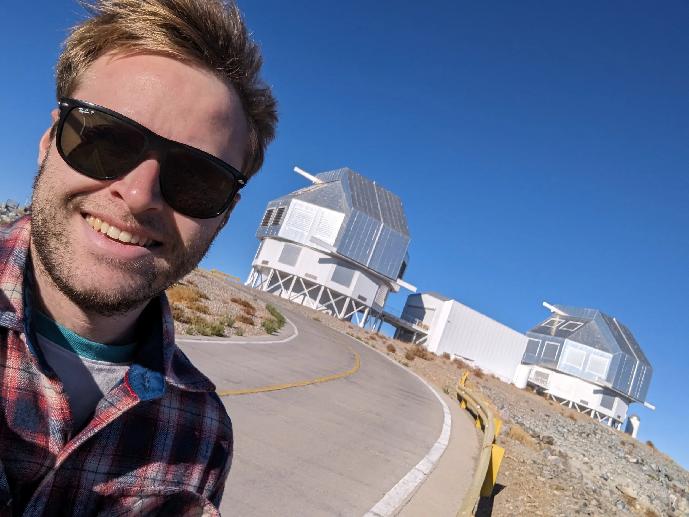
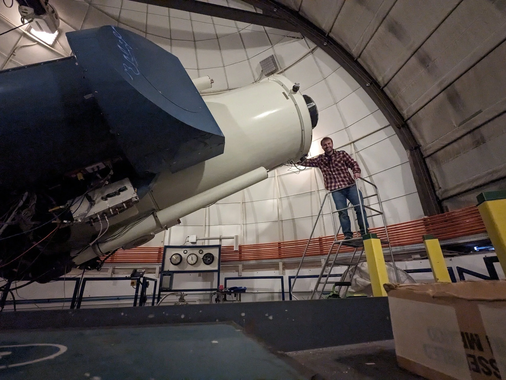
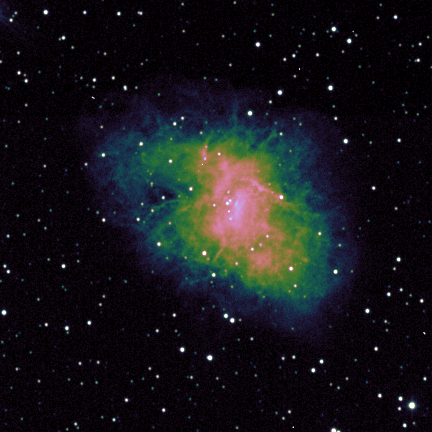
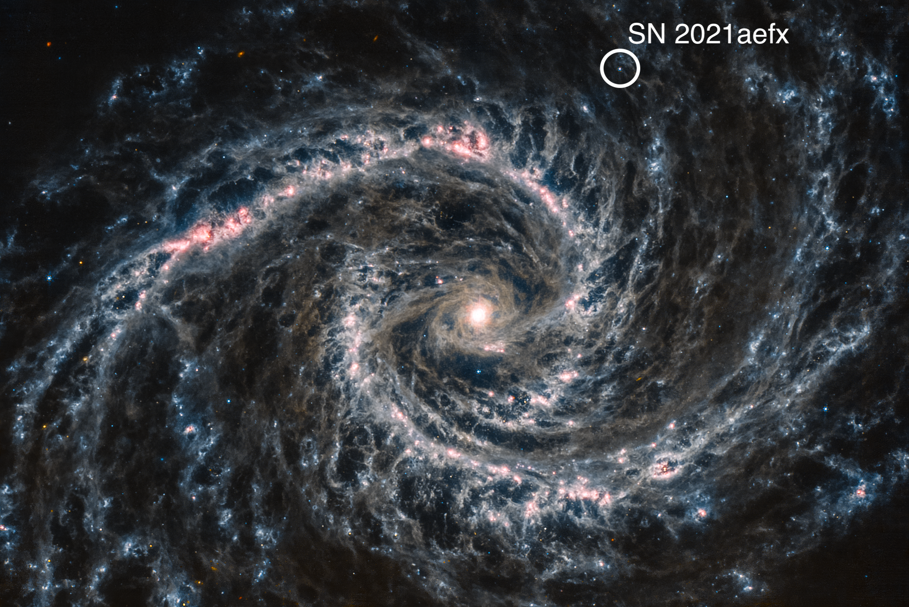

Astronomy PhD Student
Cameron Pfeffer
University of Hawaiʻi at Mānoa · Institute for Astronomy
My name is Cameron Pfeffer and I am an Astronomy Ph.D. student at the Institute for Astronomy within the University of Hawaii: Mānoa. I am a member of Dr. Chris Ashall’s supernova research group, where I observe and model the most peculiar cosmic explosions. I am a National Science Foundation Graduate Research Fellow (NSF GRFP).
Research
Astronomical Observer


I’ve been an astronomy enthusiast all my life. My passion for space began with long nights spent stargazing under the darkest skies in the east coast of the US— Ocracoke Island, North Carolina. When I got an Orion XT8 telescope in high school, I was certain that I would become an astronomer. Since then, I’ve worked my way up from that measly 8-inch reflector to some of the largest telescopes in the world. In 2023, I traveled to Chile to acquire photometry for young supernovae using the 1-meter Henrietta Swope Telescope at Las Campanas Observatory. Now I have the privilege to use the world class Mauna Kea telescopes on the big island of Hawaii. I’ve taken Near Infrared (NIR) spectra of supernovae with the Spex instrument on the 3.2-meter Infrared Telescope Facility (IRTF), and the NIRES instrument on the 10-meter Keck II observatory. I’ve also used the LRIS instrument on Keck I, as well as FOCAS on the Subaru telescope to take optical spectra of supernovae.
Theoretical Astrophysicist

I don’t just use telescopes, I model the data too! My first research project was modeling the photometric variability of the star α2 CVn. I used data from the Transiting Exoplanet Survey Satellite (TESS). Working with Dr. M. Virginia McSwain at Lehigh University, I wrote a model of this star’s dynamical magnetosphere in Python. In my model, particles trapped in the magnetosphere are responsible for its incredibly regular periodic variations in brightness. This research is published in the Astrophysical Journal.
After joining Chris Ashall’s lab, I pivoted to supernovae. I helped in the preparation of a publication focused on modeling the James Webb Space Telescope (JWST) data of the nearby Type Ia Supernovae SN2021aefx (pictured and circled on the right). I am currently working on an abundance tomography model of a peculiar Calcium Strong Transient (CaST) called PTF09dav. This was a strange supernova. It was discovered dozens of kiloparsecs away from its host galaxy, and was much less luminous than normal Type Ia supernovae. After it aged and entered its nebular phase, it revealed strong [Ca II] lines and was classified as a CaST. This type of transient is poorly understood; astronomers disagree over the nature of the progenitors of this class. Perhaps by modeling the abundance stratification of different elements in its ejecta, some light can be shed on the origin of the mysterious and perplexing CaSTs. My publication on this research is currently in preparation.